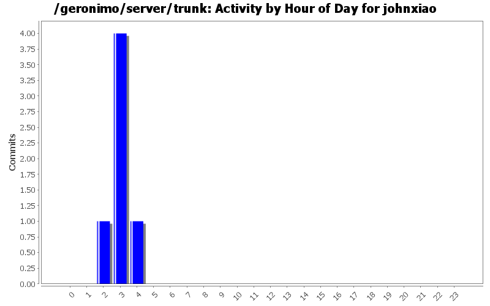
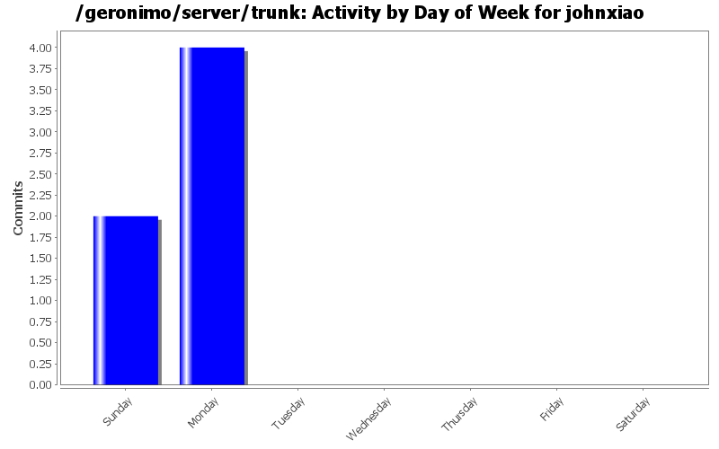
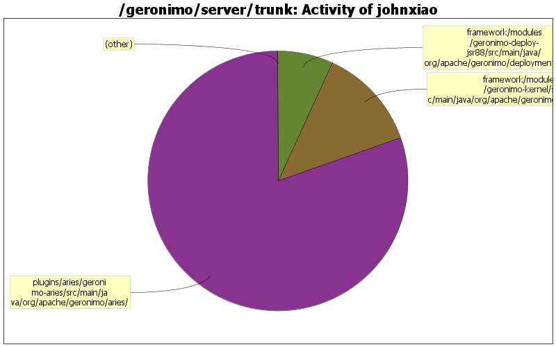

| Directory | Changes | Lines of Code | Lines per Change |
|---|---|---|---|
| Totals | 6 (100.0%) | 346 (100.0%) | 57.6 |
| plugins/aries/geronimo-aries/src/main/java/org/apache/geronimo/aries/ | 3 (50.0%) | 278 (80.3%) | 92.6 |
| framework/modules/geronimo-kernel/src/main/java/org/apache/geronimo/kernel/config/ | 1 (16.7%) | 44 (12.7%) | 44.0 |
| framework/modules/geronimo-deploy-jsr88/src/main/java/org/apache/geronimo/deployment/plugin/ | 2 (33.3%) | 24 (6.9%) | 12.0 |

Avoid NullPointerException when deploy EBA
2 lines of code changed in 1 file:
GERONIMO-6305 Start bundles in EBA according to bundle dependencies
276 lines of code changed in 2 files:
GERONIMO-6288 When deploy a EBA with long symbolicname, showing an error Msg "xxxx already existes in the server"
12 lines of code changed in 1 file:
GERONIMO-6260 Could not redeploy EJB module
12 lines of code changed in 1 file:
GERONIMO-6224 NPE while accessing the system modules portlet
44 lines of code changed in 1 file: